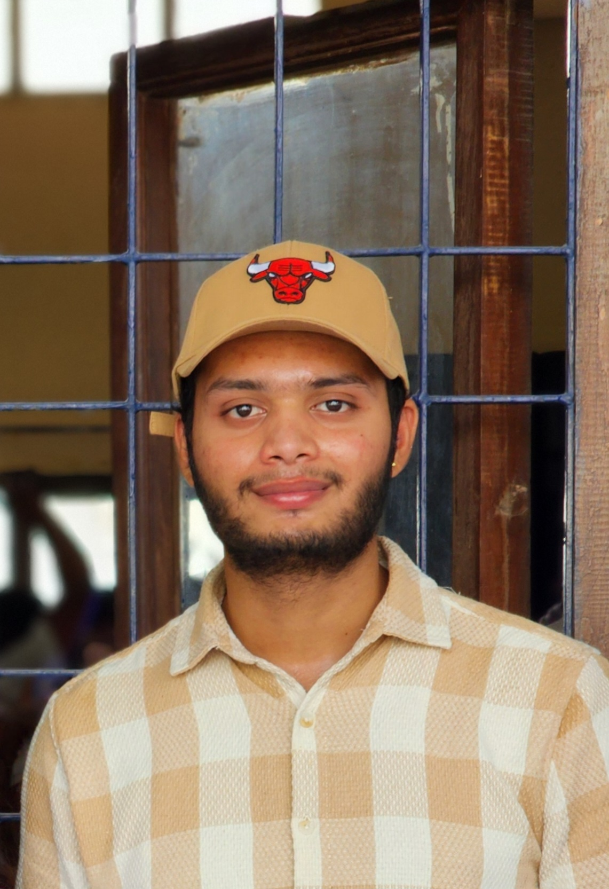

BOLLOJU VISWA

Summary
Passionate about technology and innovation, I am a B.Tech graduate eager to begin my professional journey.
Searching for a role where I can apply my programming and problem-solving abilities, learn from experienced professionals,
grow within a supportive and dynamic work environment, and collaborate effectively with a driven team.
Education Details
- Bachelor of Technology in Electronic & Instrumentation Engineering - VITS (2020-2024)
CGPA - 8.10
- Intermediate in MPC - Sri Gayatri Junior College (2018-2020)
Percentage - 88.6%
- SSC Telangana State Board - SRKSV High School (2018)
CGPA - 9.3
Work Experience
I am a fresher where I am passionate about programming in Web Development and Salesforce.
Skills
- Programming Languages:
- C, C++, JAVA, HTML, CSS, JavaScript: ⭐⭐⭐⭐
- Salesforce Developer: ⭐⭐⭐⭐
- Tools
- Soft Skills
- Leadership Skills: ⭐⭐⭐⭐
- Event Management: ⭐⭐⭐
- Time Management: ⭐⭐⭐⭐
Projects
- Wireless Power Transmission
- Automatic Gas Leakage Detector
- CD Gyroscope
Certifications
- PLC Workshop
- Salesforece PD-1 Developer Certification
Other